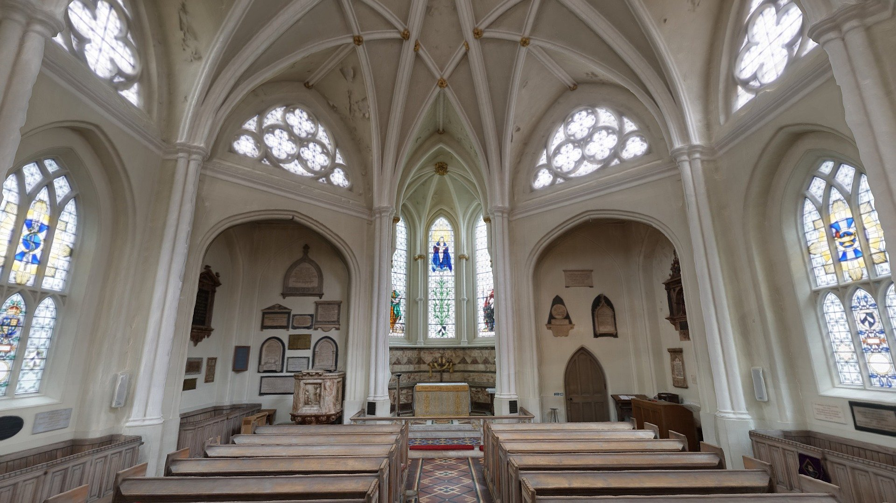
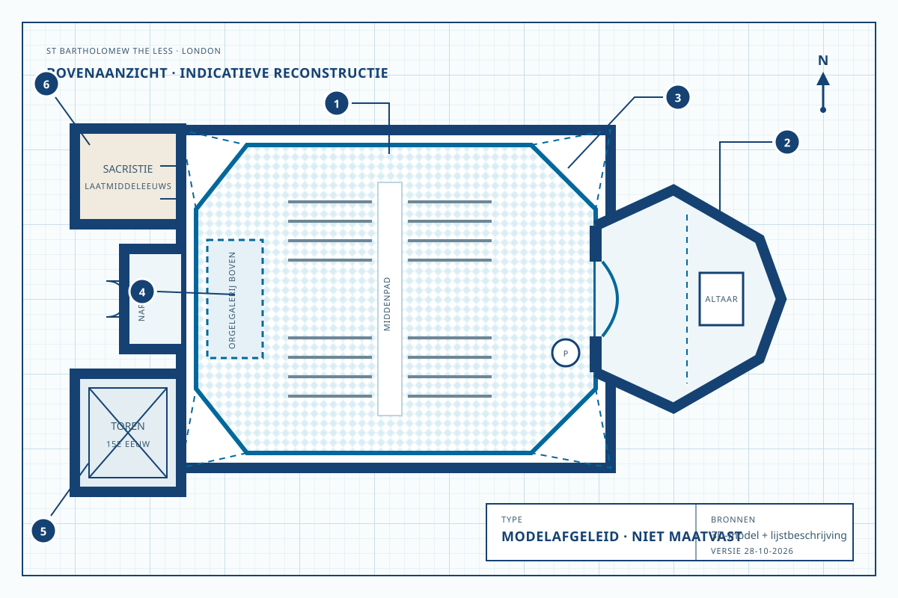
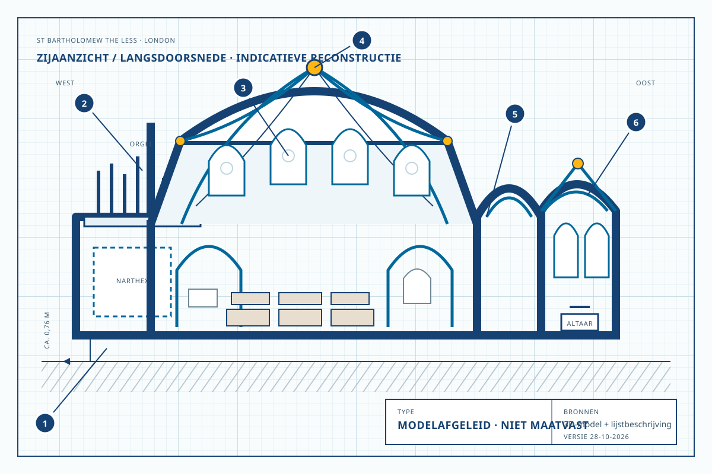

Achthoekig schip
Octogonale Anglicaanse kerken zijn zeldzaam. De vorm was tegelijk een ruimtelijk experiment en een slimme manier om binnen oudere muren te bouwen.
Onafhankelijk publieksproject

Een kleine kerk met een groot verhaal
Binnen de muren van St Bartholomew’s Hospital verbindt deze kapel religie, medische zorg en architectuur.
Verken het 3D-modelHet verhaal
St Bartholomew the Less staat op het terrein van St Bartholomew’s Hospital, vlak bij West Smithfield in de City of London. De kapel ontstond samen met het middeleeuwse ziekenhuis en is nog altijd een plek voor patiënten, medewerkers, bezoekers en de parochiegemeenschap.
Van de middeleeuwse kerk bleven vooral de vijftiende-eeuwse toren en delen van het muurwerk over. Het lichte, achthoekige interieur dat je nu ziet, is het resultaat van een bijzondere opeenvolging van ontwerpen: George Dance the Younger introduceerde de vorm in 1789–1791; Thomas Hardwick herbouwde haar in 1823–1825 in steen en gietijzer.
Digitale rondgang
Draai, zoom en kijk omhoog naar het stergewelf. Het fotogrammetrische model brengt de complete binnenruimte als één samenhangende opname bij elkaar.
Bij het starten wordt inhoud van Sketchfab geladen.
Modelafgeleide tekeningen
De tekeningen combineren de zichtbare vorm van het 3D-model met de officiële architectuurbeschrijving. Ze zijn bedoeld voor uitleg en oriëntatie, niet voor restauratie of maatvoering.


Bouwgeschiedenis
De kerk is geen momentopname van één eeuw. Elke verbouwing reageerde op oudere muren, veranderend gebruik en nieuwe ideeën over ruimte en licht.
Rahere sticht een hospitaal en priorij. De eerste kapel staat naast de oorspronkelijke priorij.
De kapel verhuist naar de plek binnen het huidige ziekenhuisterrein.
De zuidwesttoren en delen van de westzijde dateren uit deze periode. Klokken hangen nog in een middeleeuws klokkenframe.
Dance plaatst een lichte achthoekige ruimte van hout binnen de ongeveer vierkante middeleeuwse omtrek.
Door droogrot wordt Dances houten interieur vervangen. Hardwick herneemt de vorm in baksteen, natuursteen en gietijzer; aannemer Peto voert het werk uit.
Philip Hardwick vernieuwt het vijfzijdige koor en de venstertraceringen. Banken, tegelvloer en altaarhek volgen; in 1864 schenkt hij de gebeeldhouwde preekstoel.
Twintigste-eeuwse restauraties herstellen schade uit de Tweede Wereldoorlog. Hugh Easton ontwerpt nieuw glas-in-lood.
Artfletch fotografeert de kapel met een Sony a6000 en verwerkt de beelden fotogrammetrisch in Agisoft Metashape.
De Less blijft kerk en toevluchtsoord in het ziekenhuis. Tegelijk vraagt schade aan onder meer toren, sacristiedak en interieur om blijvende zorg.
Lees de ruimte
De bijzondere werking van het interieur ontstaat uit de spanning tussen een achthoekige nieuwe ruimte en een veel oudere, vrijwel vierkante bouwmassa.
Octogonale Anglicaanse kerken zijn zeldzaam. De vorm was tegelijk een ruimtelijk experiment en een slimme manier om binnen oudere muren te bouwen.
Een netwerk van ribben trekt de blik naar robuuste knopen. Kroonluchters in laat-achttiende-eeuwse stijl hangen aan de centrale knoop en de toppen van de bogen.
Lancetten, geometrische traceringen en lagere vensters met Y-vormige koppen brengen licht vanuit verschillende richtingen.
De vijfzijdige oostelijke beëindiging heeft een eigen ribgewelf. Koorboog en treden maken de overgang naar het altaar voelbaar.
Encaustische tegels, banken langs en in het schip, het altaarhek en de gebeeldhouwde preekstoel vormen een herkenbare Victoriaanse laag.
Bijzonder zijn onder meer de messing grafplaat voor William Markeby (†1439) en zijn vrouw, het monument voor John en Mary Darker en de aedicula voor Thomas Bodley. Het naoorlogse glas van Hugh Easton voegt een moderne laag toe.
Over het 3D-model
Fotogrammetrie reconstrueert vorm door dezelfde punten in veel overlappende foto’s te herkennen. Zo ontstaat eerst een puntenwolk en daarna een getextureerd 3D-oppervlak.
Het model is uitstekend geschikt om de ruimtelijke samenhang te ervaren. Het is niet gepubliceerd als metrische bouwhistorische opname; meetwaarden en vervormingen moeten daarom altijd tegen brondata worden gecontroleerd.
| Maker | artfletch |
|---|---|
| Gepubliceerd | 15 mei 2021 |
| Opname | Sony a6000, 2021 |
| Verwerking | Agisoft Metashape |
| Geometrie | 1.621.108 driehoeken · 810.657 vertices |
| Materialen | 1 materiaal · 1 textuur |
| Animatie / geluid | Geen |
| Status | Downloadbaar · Staff Pick |
| Gebruik | 9.810 downloads · 45.785 weergaven · 1.098 likes* |
| Licentie | Creative Commons Naamsvermelding 4.0 |
* Momentopname van 28 oktober 2026; aantallen op Sketchfab veranderen.
Bezoek en gebruik
De kapel ligt binnen het terrein van St Bartholomew’s Hospital, vlak bij West Smithfield. Er vinden Anglicaanse en oecumenische vieringen plaats; daarnaast is de ruimte bedoeld voor stilte en bezinning.
De parochie vermeldt ruime dagelijkse openingstijden. Controleer voor vertrek altijd de actuele toegang en het programma op de officiële website.
St Bartholomew’s Hospital
West Smithfield
London EC1
Bronnen & verantwoording
Feiten zijn ontleend aan primaire of institutionele bronnen. De tekeningen zijn een transparante interpretatie en blijven bewust zonder verzonnen maatvoering.
Modelbeschrijving, techniek, metadata en de afgebeelde modelweergave. Het model is beschikbaar onder CC BY 4.0.
Bekijk bronNational Heritage List for England, lijstnummer 1180946. Tekst is beschikbaar onder de Open Government Licence v3.0, tenzij anders vermeld.
Bekijk bronOfficiële parochie-informatie over geschiedenis, erediensten, dagelijks gebruik en de actuele herstelopgave.
Bekijk bronInstitutionele geschiedenis van het in 1123 gestichte ziekenhuis en de positie van de kerk op het terrein.
Bekijk bronNaamsvermelding model: “St Bartholomew-the-Less Interior” door artfletch, via Sketchfab, CC BY 4.0.
Ontwerp: geïnspireerd op de heldere publiekscommunicatie van cultureelerfgoed.nl. Dit project gebruikt geen RCE-logo en is geen publicatie van of namens de Rijksdienst voor het Cultureel Erfgoed.
Actualiteit: inhoud en externe links gecontroleerd op 28 oktober 2026.